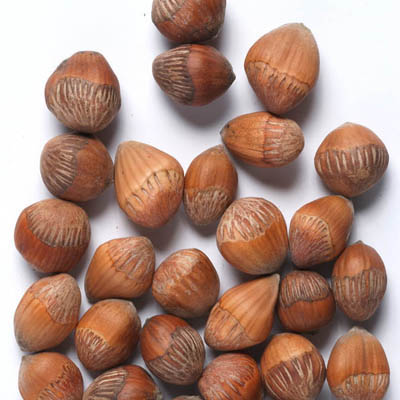

헤이즐넛(HAZELNUT)
개암나무속 나무의 열매. 견과류의 일종으로, 전 세계에서 널리 식용되고 있다. 생긴 건 도토리 비스무리하지만 도토리보다 조금 더 납작한 물방울 모양으로, 굳이 표현하자면 밤과 도토리를 동시에 닮았다.빵빵한 도토리, 뾰족한 밤 크기는 약 1.5cm 정도이며 갈색을 띤다. 껍질을 까면 크림색 혹은 상아색의 내용물이 나오는데, 사람들이 먹는 것은 바로 이 부분.[1] 맛은 밤과 비슷하나 조금 더 고소한 느낌이 강하다고 한다.

(헤이즐넛 이미지)
(헤이즐넛 이미지)
헤이즐넛의 효능
1. 심혈관질환 예방2. 고혈압 예방
3. 빈혈 개선
4. 두뇌, 뼈 건강 개선
5. 변비예방
6. 피부 미용 및 다이어트